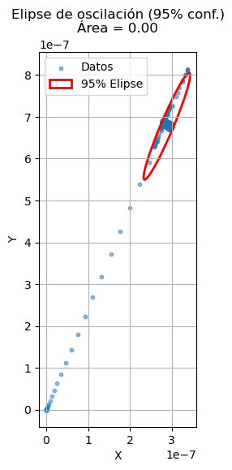

import numpy as np
import matplotlib.pyplot as plt
import pandas as pd
import scipy.io as sio
import scipy.signal as sig
from scipy.signal import tf2zpk
from scipy.spatial.transform import Rotation as R
path_ecg = "../../data"
def plot_imu_frame(axis_length=1.0, arrow_ratio=0.1):
"""
Dibuja el sistema de coordenadas de una IMU en 3D.
Parámetros:
- axis_length: longitud de cada eje.
- arrow_ratio: fracción del eje destinada a la cabeza de la flecha.
"""
# Creamos la figura y el eje 3D
fig = plt.figure(figsize=(6, 6))
ax = fig.add_subplot(111, projection="3d")
# Origen de los ejes
origin = np.array([0, 0, 0])
# Vectores unitarios para X, Y, Z
axes = np.eye(3) * axis_length
colors = ["r", "g", "b"]
labels = ["N", "Y", "-g"]
# Dibujar cada eje con quiver (flecha)
for vec, c, lab in zip(axes, colors, labels):
ax.quiver(
origin[0],
origin[1],
origin[2],
vec[0],
vec[1],
vec[2],
color=c,
arrow_length_ratio=arrow_ratio,
linewidth=2,
)
# Etiquetar el extremo del eje
ax.text(
vec[0] * 1.05,
vec[1] * 1.05,
vec[2] * 1.05,
lab,
color=c,
fontsize=14,
fontweight="bold",
)
# Ajustes de estilo
ax.set_xlim(0, axis_length * 1.2)
ax.set_ylim(0, axis_length * 1.2)
ax.set_zlim(0, axis_length * 1.2)
ax.set_xlabel("X")
ax.set_ylabel("Y")
ax.set_zlabel("Z")
ax.set_title("Sistema de coordenadas IMU")
ax.grid(True)
# Mostrar proporción igual para los tres ejes
ax.set_box_aspect([1, 1, 1])
plt.tight_layout()
plt.show()
def calcular_relacion_romberg(
param_eyes_open: float,
param_eyes_close: float,
) -> float:
return param_eyes_close / param_eyes_open
def calcular_rms(signal1):
return np.sqrt(np.mean(np.square(signal1)))
def calcular_magnitud_angular_velocity(df):
"""
Calcula la magnitud del vector de aceleración global y la agrega al DataFrame.
"""
df["Gyr_Global_Mag"] = np.sqrt(
df["Gyr_X_global"] ** 2 + df["Gyr_Y_global"] ** 2 + df["Gyr_Z_global"] ** 2
)
return df.copy()
def calcular_magnitud_aceleracion_local(df):
"""
Calcula la magnitud del vector de aceleración global y la agrega al DataFrame.
"""
df["Acc_Local_Mag"] = np.sqrt(df["Acc_Y"] ** 2 + df["Acc_Z"] ** 2)
return df.copy()
def calcular_magnitud_aceleracion(df):
"""
Calcula la magnitud del vector de aceleración global y la agrega al DataFrame.
"""
df["Acc_Global_Mag"] = np.sqrt(df["Acc_X_global"] ** 2 + df["Acc_Y_global"] ** 2)
return df.copy()
def CalculateGlobalVectors(df):
# Cuaterniones y aceleración local
quaternions = df[["Quat_q0", "Quat_q1", "Quat_q2", "Quat_q3"]].values
acc_local = df[["Acc_X", "Acc_Y", "Acc_Z"]].values
ang_vel_local = df[["Gyr_X", "Gyr_Y", "Gyr_Z"]].values
sig_filtersos = sig.butter(10, 4, "low", fs=100, output="sos")
# Aplicar filtro a las columnas de aceleración
acc_local = sig.sosfilt(sig_filtersos, acc_local)
ang_vel_local = sig.sosfilt(sig_filtersos, ang_vel_local)
df[["Acc_X", "Acc_Y", "Acc_Z"]] = acc_local
df[["Gyr_X", "Gyr_Y", "Gyr_Z"]] = ang_vel_local
# Rotar aceleraciones al sistema global
rot = R.from_quat(quaternions)
acc_global = rot.apply(acc_local)
ang_vel_global = rot.apply(ang_vel_local)
# 🔁 Normalizar Y y Z a máximo absoluto de 1
# acc_global[:, 1] = acc_global[:, 1] / np.max(np.abs(acc_global[:, 1]))
# acc_global[:, 2] = acc_global[:, 2] / np.max(np.abs(acc_global[:, 2]))
# Guardar aceleraciones normalizadas
df["Acc_X_global"] = sig.sosfilt(sig_filtersos, acc_global[:, 0])
df["Acc_Y_global"] = sig.sosfilt(sig_filtersos, acc_global[:, 1])
df["Acc_Z_global"] = sig.sosfilt(sig_filtersos, acc_global[:, 2])
df["Gyr_X_global"] = sig.sosfilt(sig_filtersos, ang_vel_global[:, 0])
df["Gyr_Y_global"] = sig.sosfilt(sig_filtersos, ang_vel_global[:, 1])
df["Gyr_Z_global"] = sig.sosfilt(sig_filtersos, ang_vel_global[:, 2])
return df.copy()
def select_mid_segment(
df: pd.DataFrame,
time_col: str = "Time",
half_length: float = 10.0,
) -> pd.DataFrame:
"""
Selecciona el segmento de df que comprende `pre_sec` segundos
antes y `post_sec` segundos después del punto medio de la serie
temporal indicada por `time_col`.
Parámetros
----------
df : pd.DataFrame
DataFrame que debe contener la columna de tiempo `time_col`.
time_col : str
Nombre de la columna de tiempo (en segundos).
pre_sec : float
Segundos a incluir antes del punto medio.
post_sec : float
Segundos a incluir después del punto medio.
Devuelve
-------
pd.DataFrame
Sub-DataFrame con las mismas columnas que `df`, filtrado
para el intervalo [midpoint - pre_sec, midpoint + post_sec].
"""
# Calcular extremo inferior y superior del tiempo
t_min = df[time_col].min()
t_max = df[time_col].max()
midpoint = (t_min + t_max) / 2
start_time = midpoint - half_length
end_time = midpoint + half_length
# Filtrar el DataFrame por el rango de tiempo
segment = df[(df[time_col] >= start_time) & (df[time_col] <= end_time)].copy()
return segment
dataDualTask = pd.read_csv(
"data/BalanceAssessment/KMartinez/Xsens/TUG/dt_01_01200628_000-000.txt",
sep="\t",
skiprows=12,
)
dataEyeClosed = pd.read_csv(
"data/BalanceAssessment/KMartinez/Xsens/TUG/ec_01_01200628_000-000.txt",
sep="\t",
skiprows=12,
)
dataEyeOpen = pd.read_csv(
"data/BalanceAssessment/KMartinez/Xsens/TUG/eo_01_01200628_000-000.txt",
sep="\t",
skiprows=12,
)
dataEyeClosed = dataEyeClosed.drop(columns=["PacketCounter", "SampleTimeFine"])
dataDualTask = dataDualTask.drop(columns=["PacketCounter", "SampleTimeFine"])
dataEyeOpen = dataEyeOpen.drop(columns=["PacketCounter", "SampleTimeFine"])
fs = 100
Ts = 1 / fs
dataEyeOpen["Time"] = Ts * np.arange(0, len(dataEyeOpen))
dataEyeClosed["Time"] = Ts * np.arange(0, len(dataEyeClosed))
dataDualTask["Time"] = Ts * np.arange(0, len(dataDualTask))
dataDualTask = CalculateGlobalVectors(dataDualTask)
dataEyeClosed = CalculateGlobalVectors(dataEyeClosed)
dataEyeOpen = CalculateGlobalVectors(dataEyeOpen)
dataDualTask = calcular_magnitud_aceleracion(dataDualTask)
dataEyeClosed = calcular_magnitud_aceleracion(dataEyeClosed)
dataEyeOpen = calcular_magnitud_aceleracion(dataEyeOpen)
dataDualTask = calcular_magnitud_aceleracion_local(dataDualTask)
dataEyeClosed = calcular_magnitud_aceleracion_local(dataEyeClosed)
dataEyeOpen = calcular_magnitud_aceleracion_local(dataEyeOpen)
dataDualTask = calcular_magnitud_angular_velocity(dataDualTask)
dataEyeClosed = calcular_magnitud_angular_velocity(dataEyeClosed)
dataEyeOpen = calcular_magnitud_angular_velocity(dataEyeOpen)import numpy as np
import matplotlib.pyplot as plt
from scipy.stats import chi2
def ellipse_sway_area(x, y, confidence=0.95, plot=True):
"""
Calcula el área y dibuja la elipse de oscilación para los datos (x,y)
cubriendo el porcentaje de confianza dado (p.ej. 0.95 para 95%).
Parámetros:
- x, y: arrays de coordenadas (misma longitud).
- confidence: nivel de confianza (entre 0 y 1).
- plot: si True, dibuja los puntos y la elipse.
Retorna:
- area: área de la elipse.
- width, height: semiejes mayor y menor.
- angle: ángulo de rotación en grados.
"""
# Centro (media)
mu = np.array([np.mean(x), np.mean(y)])
# Matriz de covarianza
cov = np.cov(x, y)
# Eigenvalores y eigenvectores
vals, vecs = np.linalg.eigh(cov)
# Ordenar de mayor a menor
order = vals.argsort()[::-1]
vals = vals[order]
vecs = vecs[:, order]
# Factor de escala: chi-cuadrado inverso para 2 grados y nivel dado
chi2_val = chi2.ppf(confidence, df=2)
# Semiejes
a = np.sqrt(vals[0] * chi2_val)
b = np.sqrt(vals[1] * chi2_val)
area = np.pi * a * b
# Ángulo de rotación (en grados) del semieje mayor respecto al eje X
angle = np.degrees(np.arctan2(vecs[1, 0], vecs[0, 0]))
if plot:
fig, ax = plt.subplots(figsize=(6, 6))
ax.scatter(x, y, s=10, alpha=0.5, label="Datos")
# Dibujo de la elipse
from matplotlib.patches import Ellipse
ellipse = Ellipse(
xy=mu,
width=2 * a,
height=2 * b,
angle=angle,
edgecolor="r",
facecolor="none",
lw=2,
label=f"{int(confidence*100)}% Elipse",
)
ax.add_patch(ellipse)
ax.set_aspect("equal")
ax.set_xlabel("X")
ax.set_ylabel("Y")
ax.set_title(
f"Elipse de oscilación ({int(confidence*100)}% conf.)\nÁrea = {area:.2f}"
)
ax.legend()
plt.grid(True)
plt.show()
return area, a, b, angle
# Ejemplo de uso:
if __name__ == "__main__":
# Simulamos datos de sway
np.random.seed(0)
x = np.random.normal(0, 1, size=500)
y = 0.5 * x + np.random.normal(0, 0.8, size=500)
area, a, b, angle = ellipse_sway_area(
dataDualTask["Acc_X_global"], dataDualTask["Acc_Y_global"], confidence=0.95
)
print(f"Área de la elipse al 95 %: {area:.4f}")
print(f"Semiejes: a={a:.2f}, b={b:.2f}, ángulo={angle:.1f}°")
Área de la elipse al 95 %: 0.0000
Semiejes: a=0.00, b=0.00, ángulo=67.1°rmsAccX_eo = calcular_rms(dataEyeOpen["Acc_X_global"])
rmsAccY_eo = calcular_rms(dataEyeOpen["Acc_Y_global"])
rmsAccZ_eo = calcular_rms(dataEyeOpen["Acc_Z_global"])
rmsGyrX_eo = calcular_rms(dataEyeOpen["Gyr_X_global"])
rmsGyrY_eo = calcular_rms(dataEyeOpen["Gyr_Y_global"])
rmsGyrZ_eo = calcular_rms(dataEyeOpen["Gyr_Z_global"])
pathTrajectAcc_eo = np.sum(dataEyeOpen["Acc_Local_Mag"])
areaAcc_eo, a, b, angle = ellipse_sway_area(
dataEyeOpen["Acc_X_global"],
dataEyeOpen["Acc_Y_global"],
confidence=0.95,
plot=False,
)rmsAccX_ec = calcular_rms(dataEyeClosed["Acc_X_global"])
rmsAccY_ec = calcular_rms(dataEyeClosed["Acc_Y_global"])
rmsAccZ_ec = calcular_rms(dataEyeClosed["Acc_Z_global"])
rmsGyrX_ec = calcular_rms(dataEyeClosed["Gyr_X_global"])
rmsGyrY_ec = calcular_rms(dataEyeClosed["Gyr_Y_global"])
rmsGyrZ_ec = calcular_rms(dataEyeClosed["Gyr_Z_global"])
pathTrajectAcc_ec = np.sum(dataEyeClosed["Acc_Local_Mag"])
areaAcc_ec, a, b, angle = ellipse_sway_area(
dataEyeClosed["Acc_X_global"],
dataEyeClosed["Acc_Y_global"],
confidence=0.95,
plot=False,
)rmsAccX_dt = calcular_rms(dataDualTask["Acc_X_global"])
rmsAccY_dt = calcular_rms(dataDualTask["Acc_Y_global"])
rmsAccZ_dt = calcular_rms(dataDualTask["Acc_Z_global"])
rmsGyrX_dt = calcular_rms(dataDualTask["Gyr_X_global"])
rmsGyrY_dt = calcular_rms(dataDualTask["Gyr_Y_global"])
rmsGyrZ_dt = calcular_rms(dataDualTask["Gyr_Z_global"])
pathTrajectAcc_dt = np.sum(dataDualTask["Acc_Local_Mag"])
areaAcc_dt, a, b, angle = ellipse_sway_area(
dataDualTask["Acc_X_global"], dataDualTask["Acc_Y_global"], confidence=0.95,plot=False
)rmsAccX_dt = calcular_rms(dataDualTask["Acc_X_global"])
rmsAccY_dt = calcular_rms(dataDualTask["Acc_Y_global"])
rmsAccZ_dt = calcular_rms(dataDualTask["Acc_Z_global"])
rmsGyrX_dt = calcular_rms(dataDualTask["Gyr_X_global"])
rmsGyrY_dt = calcular_rms(dataDualTask["Gyr_Y_global"])
rmsGyrZ_dt = calcular_rms(dataDualTask["Gyr_Z_global"])
pathTrajectAcc_dt = np.sum(dataDualTask["Acc_Local_Mag"])
areaAcc_dt, a, b, angle = ellipse_sway_area(
dataDualTask["Acc_X_global"],
dataDualTask["Acc_Y_global"],
confidence=0.95,
plot=False,
)
rmsAccX_ec = calcular_rms(dataEyeClosed["Acc_X_global"])
rmsAccY_ec = calcular_rms(dataEyeClosed["Acc_Y_global"])
rmsAccZ_ec = calcular_rms(dataEyeClosed["Acc_Z_global"])
rmsGyrX_ec = calcular_rms(dataEyeClosed["Gyr_X_global"])
rmsGyrY_ec = calcular_rms(dataEyeClosed["Gyr_Y_global"])
rmsGyrZ_ec = calcular_rms(dataEyeClosed["Gyr_Z_global"])
pathTrajectAcc_ec = np.sum(dataEyeClosed["Acc_Local_Mag"])
areaAcc_ec, a, b, angle = ellipse_sway_area(
dataEyeClosed["Acc_X_global"],
dataEyeClosed["Acc_Y_global"],
confidence=0.95,
plot=False,
)
rmsAccX_eo = calcular_rms(dataEyeOpen["Acc_X_global"])
rmsAccY_eo = calcular_rms(dataEyeOpen["Acc_Y_global"])
rmsAccZ_eo = calcular_rms(dataEyeOpen["Acc_Z_global"])
rmsGyrX_eo = calcular_rms(dataEyeOpen["Gyr_X_global"])
rmsGyrY_eo = calcular_rms(dataEyeOpen["Gyr_Y_global"])
rmsGyrZ_eo = calcular_rms(dataEyeOpen["Gyr_Z_global"])
pathTrajectAcc_eo = np.sum(dataEyeOpen["Acc_Local_Mag"])
areaAcc_eo, a, b, angle = ellipse_sway_area(
dataEyeOpen["Acc_X_global"],
dataEyeOpen["Acc_Y_global"],
confidence=0.95,
plot=False,
)